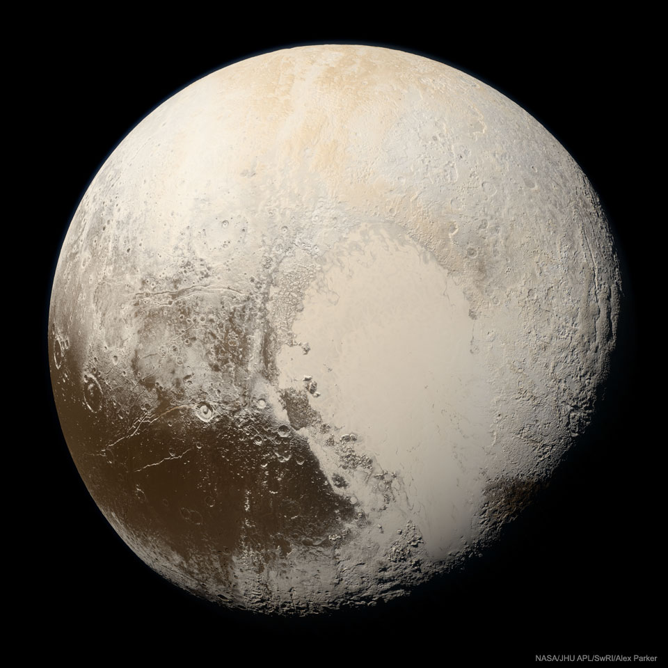

Pluto in True Color
Image Credit: NASA, JHU APL, SwRI; Processing: Alex Parker
Explanation: What color is Pluto, really? It took some effort to figure out. Even given all of the images sent back to Earth when the robotic New Horizons spacecraft sped past Pluto in 2015, processing these multi-spectral frames to approximate what the human eye would see was challenging. The result featured here, released three years after the raw data was acquired by New Horizons, is the highest resolution true color image of Pluto ever taken. Visible in the image is the light-colored, heart-shaped, Tombaugh Regio, with the unexpectedly smooth Sputnik Planitia, made of frozen nitrogen, filling its western lobe. New Horizons found the dwarf planet to have a surprisingly complex surface composed of many regions having perceptibly different hues. In total, though, Pluto is mostly brown, with much of its muted color originating from small amounts of surface methane energized by ultraviolet light from the Sun.